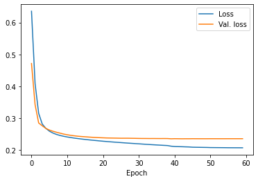
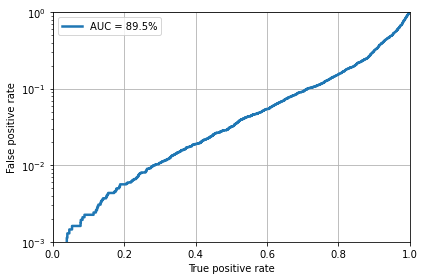

Week 5 Notebook: Building a Deep Learning Model¶
import keras
import numpy as np
from sklearn.metrics import roc_curve, auc
import matplotlib.pyplot as plt
import uproot
Using TensorFlow backend.
/usr/share/miniconda/envs/analysis/lib/python3.7/site-packages/tensorflow/python/framework/dtypes.py:516: FutureWarning: Passing (type, 1) or '1type' as a synonym of type is deprecated; in a future version of numpy, it will be understood as (type, (1,)) / '(1,)type'.
_np_qint8 = np.dtype([("qint8", np.int8, 1)])
/usr/share/miniconda/envs/analysis/lib/python3.7/site-packages/tensorflow/python/framework/dtypes.py:517: FutureWarning: Passing (type, 1) or '1type' as a synonym of type is deprecated; in a future version of numpy, it will be understood as (type, (1,)) / '(1,)type'.
_np_quint8 = np.dtype([("quint8", np.uint8, 1)])
/usr/share/miniconda/envs/analysis/lib/python3.7/site-packages/tensorflow/python/framework/dtypes.py:518: FutureWarning: Passing (type, 1) or '1type' as a synonym of type is deprecated; in a future version of numpy, it will be understood as (type, (1,)) / '(1,)type'.
_np_qint16 = np.dtype([("qint16", np.int16, 1)])
/usr/share/miniconda/envs/analysis/lib/python3.7/site-packages/tensorflow/python/framework/dtypes.py:519: FutureWarning: Passing (type, 1) or '1type' as a synonym of type is deprecated; in a future version of numpy, it will be understood as (type, (1,)) / '(1,)type'.
_np_quint16 = np.dtype([("quint16", np.uint16, 1)])
/usr/share/miniconda/envs/analysis/lib/python3.7/site-packages/tensorflow/python/framework/dtypes.py:520: FutureWarning: Passing (type, 1) or '1type' as a synonym of type is deprecated; in a future version of numpy, it will be understood as (type, (1,)) / '(1,)type'.
_np_qint32 = np.dtype([("qint32", np.int32, 1)])
/usr/share/miniconda/envs/analysis/lib/python3.7/site-packages/tensorflow/python/framework/dtypes.py:525: FutureWarning: Passing (type, 1) or '1type' as a synonym of type is deprecated; in a future version of numpy, it will be understood as (type, (1,)) / '(1,)type'.
np_resource = np.dtype([("resource", np.ubyte, 1)])
/usr/share/miniconda/envs/analysis/lib/python3.7/site-packages/tensorboard/compat/tensorflow_stub/dtypes.py:541: FutureWarning: Passing (type, 1) or '1type' as a synonym of type is deprecated; in a future version of numpy, it will be understood as (type, (1,)) / '(1,)type'.
_np_qint8 = np.dtype([("qint8", np.int8, 1)])
/usr/share/miniconda/envs/analysis/lib/python3.7/site-packages/tensorboard/compat/tensorflow_stub/dtypes.py:542: FutureWarning: Passing (type, 1) or '1type' as a synonym of type is deprecated; in a future version of numpy, it will be understood as (type, (1,)) / '(1,)type'.
_np_quint8 = np.dtype([("quint8", np.uint8, 1)])
/usr/share/miniconda/envs/analysis/lib/python3.7/site-packages/tensorboard/compat/tensorflow_stub/dtypes.py:543: FutureWarning: Passing (type, 1) or '1type' as a synonym of type is deprecated; in a future version of numpy, it will be understood as (type, (1,)) / '(1,)type'.
_np_qint16 = np.dtype([("qint16", np.int16, 1)])
/usr/share/miniconda/envs/analysis/lib/python3.7/site-packages/tensorboard/compat/tensorflow_stub/dtypes.py:544: FutureWarning: Passing (type, 1) or '1type' as a synonym of type is deprecated; in a future version of numpy, it will be understood as (type, (1,)) / '(1,)type'.
_np_quint16 = np.dtype([("quint16", np.uint16, 1)])
/usr/share/miniconda/envs/analysis/lib/python3.7/site-packages/tensorboard/compat/tensorflow_stub/dtypes.py:545: FutureWarning: Passing (type, 1) or '1type' as a synonym of type is deprecated; in a future version of numpy, it will be understood as (type, (1,)) / '(1,)type'.
_np_qint32 = np.dtype([("qint32", np.int32, 1)])
/usr/share/miniconda/envs/analysis/lib/python3.7/site-packages/tensorboard/compat/tensorflow_stub/dtypes.py:550: FutureWarning: Passing (type, 1) or '1type' as a synonym of type is deprecated; in a future version of numpy, it will be understood as (type, (1,)) / '(1,)type'.
np_resource = np.dtype([("resource", np.ubyte, 1)])
# 27 features
features = ['fj_jetNTracks',
'fj_nSV',
'fj_tau0_trackEtaRel_0',
'fj_tau0_trackEtaRel_1',
'fj_tau0_trackEtaRel_2',
'fj_tau1_trackEtaRel_0',
'fj_tau1_trackEtaRel_1',
'fj_tau1_trackEtaRel_2',
'fj_tau_flightDistance2dSig_0',
'fj_tau_flightDistance2dSig_1',
'fj_tau_vertexDeltaR_0',
'fj_tau_vertexEnergyRatio_0',
'fj_tau_vertexEnergyRatio_1',
'fj_tau_vertexMass_0',
'fj_tau_vertexMass_1',
'fj_trackSip2dSigAboveBottom_0',
'fj_trackSip2dSigAboveBottom_1',
'fj_trackSip2dSigAboveCharm_0',
'fj_trackSipdSig_0',
'fj_trackSipdSig_0_0',
'fj_trackSipdSig_0_1',
'fj_trackSipdSig_1',
'fj_trackSipdSig_1_0',
'fj_trackSipdSig_1_1',
'fj_trackSipdSig_2',
'fj_trackSipdSig_3',
'fj_z_ratio']
# spectators to define mass/pT window
spectators = ['fj_sdmass',
'fj_pt']
# 2 labels: QCD or Hbb (we'll reduce the following labels)
labels = ['label_QCD_b',
'label_QCD_bb',
'label_QCD_c',
'label_QCD_cc',
'label_QCD_others',
'sample_isQCD',
'label_H_bb']
nfeatures = len(features)
nspectators = len(spectators)
nlabels = 2
Note on bytestrings versus strings: uproot expects bytestrings for branch names, so we need to encode our usual strings (or preface them with b).
print('fj_zratio')
print(b'fj_zratio')
print('fj_zratio'.encode())
fj_zratio
b'fj_zratio'
b'fj_zratio'
def get_features_labels(file_name, remove_mass_pt_window=True, entrystop=None):
# load file
root_file = uproot.open(file_name)
tree = root_file['deepntuplizer/tree']
feature_array = tree.arrays(branches=features,
entrystop=entrystop)
spec_array = tree.arrays(branches=spectators,
entrystop=entrystop)
label_array_all = tree.arrays(branches=labels,
entrystop=entrystop)
feature_array = np.stack([feature_array[feat.encode()] for feat in features],axis=1)
spec_array = np.stack([spec_array[spec.encode()] for spec in spectators],axis=1)
njets = feature_array.shape[0]
label_array = np.zeros((njets,nlabels))
label_array[:,0] = label_array_all[b'sample_isQCD'] * (label_array_all[b'label_QCD_b']+label_array_all[b'label_QCD_bb']+label_array_all[b'label_QCD_c']+label_array_all[b'label_QCD_cc']+label_array_all[b'label_QCD_others'])
label_array[:,1] = label_array_all[b'label_H_bb']
# remove samples outside mass/pT window
if remove_mass_pt_window:
feature_array = feature_array[(spec_array[:,0] > 40) & (spec_array[:,0] < 200) & (spec_array[:,1] > 300) & (spec_array[:,1] < 2000)]
label_array = label_array[(spec_array[:,0] > 40) & (spec_array[:,0] < 200) & (spec_array[:,1] > 300) & (spec_array[:,1] < 2000)]
spec_array = spec_array[(spec_array[:,0] > 40) & (spec_array[:,0] < 200) & (spec_array[:,1] > 300) & (spec_array[:,1] < 2000)]
# remove unlabeled data
feature_array = feature_array[np.sum(label_array,axis=1)==1]
spec_array = spec_array[np.sum(label_array,axis=1)==1]
label_array = label_array[np.sum(label_array,axis=1)==1]
return feature_array, label_array, spec_array
# load training file
feature_array, label_array, spec_array = get_features_labels('root://eospublic.cern.ch//eos/opendata/cms/datascience/HiggsToBBNtupleProducerTool/HiggsToBBNTuple_HiggsToBB_QCD_RunII_13TeV_MC/train/ntuple_merged_10.root',
remove_mass_pt_window=False,
entrystop=20000)
from keras.models import Model
from keras.layers import Input, Dense, BatchNormalization
# define dense keras model
inputs = Input(shape=(nfeatures,), name = 'input')
x = BatchNormalization(name='bn_1')(inputs)
x = Dense(64, name = 'dense_1', activation='relu')(x)
x = Dense(32, name = 'dense_2', activation='relu')(x)
x = Dense(32, name = 'dense_3', activation='relu')(x)
outputs = Dense(nlabels, name = 'output', activation='softmax')(x)
keras_model = Model(inputs=inputs, outputs=outputs)
keras_model.compile(optimizer='adam', loss='categorical_crossentropy', metrics=['accuracy'])
print(keras_model.summary())
Model: "model_1"
_________________________________________________________________
Layer (type) Output Shape Param #
=================================================================
input (InputLayer) (None, 27) 0
_________________________________________________________________
bn_1 (BatchNormalization) (None, 27) 108
_________________________________________________________________
dense_1 (Dense) (None, 64) 1792
_________________________________________________________________
dense_2 (Dense) (None, 32) 2080
_________________________________________________________________
dense_3 (Dense) (None, 32) 1056
_________________________________________________________________
output (Dense) (None, 2) 66
=================================================================
Total params: 5,102
Trainable params: 5,048
Non-trainable params: 54
_________________________________________________________________
None
# define callbacks
from keras.callbacks import ModelCheckpoint, EarlyStopping, ReduceLROnPlateau
early_stopping = EarlyStopping(monitor='val_loss', patience=20)
reduce_lr = ReduceLROnPlateau(patience=5,factor=0.5)
model_checkpoint = ModelCheckpoint('keras_model_best.h5', monitor='val_loss', save_best_only=True)
callbacks = [early_stopping, model_checkpoint, reduce_lr]
# fit keras model
history = keras_model.fit(feature_array, label_array, batch_size=1024,
epochs=100, validation_split=0.2, shuffle=False,
callbacks = callbacks, verbose=0)
WARNING:tensorflow:From /usr/share/miniconda/envs/analysis/lib/python3.7/site-packages/keras/backend/tensorflow_backend.py:422: The name tf.global_variables is deprecated. Please use tf.compat.v1.global_variables instead.
plt.figure()
plt.plot(history.history['loss'],label='Loss')
plt.plot(history.history['val_loss'],label='Val. loss')
plt.xlabel('Epoch')
plt.legend()
plt.show()

# load testing file
feature_array_test, label_array_test, spec_array_test = get_features_labels('root://eospublic.cern.ch//eos/opendata/cms/datascience/HiggsToBBNtupleProducerTool/HiggsToBBNTuple_HiggsToBB_QCD_RunII_13TeV_MC/test/ntuple_merged_0.root',
remove_mass_pt_window=True,
entrystop=30000)
# reload best weights
keras_model.load_weights('keras_model_best.h5')
# run model inference on test data set
predict_array_test = keras_model.predict(feature_array_test)
# create ROC curve
fpr, tpr, threshold = roc_curve(label_array_test[:,1], predict_array_test[:,1])
# plot ROC curve
plt.figure()
plt.plot(tpr, fpr, lw=2.5, label="AUC = {:.1f}%".format(auc(fpr,tpr)*100))
plt.xlabel(r'True positive rate')
plt.ylabel(r'False positive rate')
plt.semilogy()
plt.ylim(0.001,1)
plt.xlim(0,1)
plt.grid(True)
plt.legend(loc='upper left')
plt.tight_layout()
plt.savefig('ROC.png')
plt.savefig('ROC.pdf')
